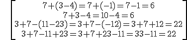

operaciones con números enteros
1. SUMA Y RESTA
- si tienen el mismo signo, sumamos sus valores absolutos y ponemos el signo común:
3 + 4 = 7 - 3 - 4 = - 7
- si tienen signo diferente, restamos el mayor valor absoluto menos el menor y ponemos el signo del de mayor valor absoluto:
3 – 7 = - 4 11 – 7 = 4
Si tenemos más de dos números enteros:
NOTA: Si hay un signo negativo delante de un paréntesis, cambiamos el signo del resultado (o el signo de todos los números que hay dentro del paréntesis) y si hay uno positivo no cambiamos nada:

2. MULTIPLICACIÓN Y DIVISIÓN
Cuando tenemos dos números enteros, multiplicamos (o dividimos) sus valores absolutos y aplicamos la regla de los signos:
Cuando tenemos más de dos números enteros, usamos la propiedad asociativa y multiplicamos (o dividimos) en parejas:
-3·(-5)·(-11)= 15·(-11) = -165
-120:(-5):12 = 24:12 = 2
NOTA: Recuerda la jerarquía de las operaciones:
Ejercicio: Calcula:
a) -5 + (7-3) - 8·3 + 2:2 =
b) 5 - 3·[3 + 2·2 - 5] + 15 - 12:(6-8) =
c) 144:(-16):3=
Soluciones: 1.- a) -24; b) 20; c) -3
Obra publicada con Licencia Creative Commons Reconocimiento No comercial Compartir igual 3.0